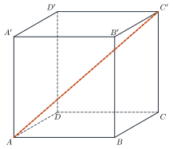
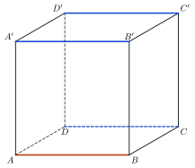
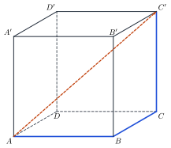
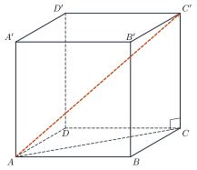
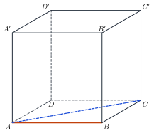
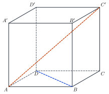

Vectors in SpaceVectơ và các phép toán trong không gian
Grade 12 · Topic: Vectors and Coordinates in SpaceLớp 12 · Chủ đề: Vectơ và hệ tọa độ trong không gian
1Lesson IntroductionGiới thiệu bài học
Learning goalsMục tiêu bài học
By the end of this lesson you can:
Sau bài học này, em có thể:
recognise vectors in space and equal or opposite vectors;
nhận biết vectơ trong không gian, vectơ bằng nhau, đối nhau;
add vectors with the triangle rule and the parallelepiped rule;
cộng vectơ bằng quy tắc ba điểm và quy tắc hình hộp;
find the dot product and the angle between vectors;
tính tích vô hướng của hai vectơ và góc giữa hai vectơ;
use vectors in a cube to find lengths and angles.
dùng vectơ trong hình lập phương để tính độ dài và góc.
2Mathematical VocabularyTừ vựng Toán học
vector in space – a quantity with a length and a direction, drawn as an arrow in space.
vectơ trong không gian – đại lượng có độ dài và hướng, biểu diễn bằng một mũi tên trong không gian.
magnitude (length) – the length of the arrow.
độ dài của vectơ – độ dài của đoạn thẳng biểu diễn vectơ.
equal vectors – vectors with the same direction and the same length.
hai vectơ bằng nhau – hai vectơ cùng hướng và cùng độ dài.
opposite vectors – vectors with the same length and opposite directions.
hai vectơ đối nhau – hai vectơ cùng độ dài và ngược hướng.
sum of vectors – the vector from the start of the first to the end of the second.
tổng của hai vectơ – vectơ đi từ điểm đầu của vectơ thứ nhất đến điểm cuối của vectơ thứ hai.
parallelepiped rule – the sum of three edge vectors from one vertex is the diagonal.
quy tắc hình hộp – tổng ba vectơ cạnh xuất phát từ một đỉnh là vectơ đường chéo hình hộp.
dot product – the number \(\vec a\cdot\vec b=|\vec a||\vec b|\cos\theta\).
tích vô hướng của hai vectơ – số \(\vec a\cdot\vec b=|\vec a||\vec b|\cos\theta\).
angle between vectors – the angle between two arrows drawn from the same point.
góc giữa hai vectơ – góc giữa hai vectơ có cùng điểm đầu, từ \(0^\circ\) đến \(180^\circ\).
cube – a solid with six equal square faces.
hình lập phương – khối có sáu mặt là các hình vuông bằng nhau.
3Useful English PhrasesCụm từ tiếng Anh thường gặp
Find the length of the vector.
Tìm độ dài của vectơ.
Find the dot product.
Tính tích vô hướng.
Find the angle between the two vectors.
Tìm góc giữa hai vectơ.
Express the vector in terms of \(\vec a,\vec b,\vec c\).
Biểu diễn vectơ theo \(\vec a,\vec b,\vec c\).
\(I\) is the midpoint of \(AB\).
\(I\) là trung điểm của \(AB\).
4Prerequisite ReviewÔn tập kiến thức nền
A vector has a direction and a length. In plane geometry you added vectors with the triangle rule \(\overrightarrow{AB}+\overrightarrow{BC}=\overrightarrow{AC}\); the same rule works in space.
Vectơ có hướng và độ dài. Ở hình học phẳng, ta cộng vectơ bằng quy tắc ba điểm \(\overrightarrow{AB}+\overrightarrow{BC}=\overrightarrow{AC}\); quy tắc này vẫn đúng trong không gian.
5TheoryLý thuyết
5.1 Vectors in spaceVectơ trong không gian và các phép toán
DefinitionĐịnh nghĩa
A vector in space \(\overrightarrow{AB}\) has start \(A\), end \(B\), a direction and a length \(|\overrightarrow{AB}|=AB\). Two vectors are equal if they have the same direction and the same length.
Vectơ trong không gian \(\overrightarrow{AB}\) có điểm đầu \(A\), điểm cuối \(B\), có hướng và độ dài của vectơ \(|\overrightarrow{AB}|=AB\). Hai vectơ hai vectơ bằng nhau nếu cùng hướng và cùng độ dài.
RulesQuy tắc
Triangle rule: \(\overrightarrow{AB}+\overrightarrow{BC}=\overrightarrow{AC}\).
Quy tắc ba điểm: \(\overrightarrow{AB}+\overrightarrow{BC}=\overrightarrow{AC}\).
Subtraction: \(\overrightarrow{AB}-\overrightarrow{AC}=\overrightarrow{CB}\).
Hiệu: \(\overrightarrow{AB}-\overrightarrow{AC}=\overrightarrow{CB}\).
Parallelepiped rule: \(\overrightarrow{AB}+\overrightarrow{AD}+\overrightarrow{AA'}=\overrightarrow{AC'}\).
Quy tắc hình hộp: \(\overrightarrow{AB}+\overrightarrow{AD}+\overrightarrow{AA'}=\overrightarrow{AC'}\).
Midpoint \(I\) of \(AB\): \(\overrightarrow{OI}=\dfrac12(\overrightarrow{OA}+\overrightarrow{OB})\).
Trung điểm \(I\) của \(AB\): \(\overrightarrow{OI}=\dfrac12(\overrightarrow{OA}+\overrightarrow{OB})\).

5.2 Dot product and angleTích vô hướng và góc giữa hai vectơ
FormulaCông thức
If \(\theta\) is the angle between \(\vec a\) and \(\vec b\) (\(0^\circ\le\theta\le180^\circ\)), then \(\vec a\cdot\vec b=|\vec a||\vec b|\cos\theta\). So \(\cos\theta=\dfrac{\vec a\cdot\vec b}{|\vec a||\vec b|}\), and \(\vec a\cdot\vec b=0\) exactly when \(\vec a\perp\vec b\).
Nếu \(\theta\) là góc giữa \(\vec a\) và \(\vec b\) (\(0^\circ\le\theta\le180^\circ\)) thì \(\vec a\cdot\vec b=|\vec a||\vec b|\cos\theta\). Suy ra \(\cos\theta=\dfrac{\vec a\cdot\vec b}{|\vec a||\vec b|}\), và \(\vec a\cdot\vec b=0\) khi và chỉ khi \(\vec a\perp\vec b\).
Watch out!Lưu ý
The angle between two vectors needs the same start point. To find \((\overrightarrow{AB},\overrightarrow{CD})\), move one vector, or use equal vectors such as \(\overrightarrow{CD}=-\overrightarrow{AB}\) in a cube.
Góc giữa hai vectơ cần cùng điểm đầu. Để tìm \((\overrightarrow{AB},\overrightarrow{CD})\), hãy dời một vectơ, hoặc dùng các vectơ bằng nhau như \(\overrightarrow{CD}=-\overrightarrow{AB}\) trong hình lập phương.
Useful in a cubeHay dùng trong hình lập phương
For a cube with edge \(a\): \(\overrightarrow{AB},\overrightarrow{AD},\overrightarrow{AA'}\) are pairwise perpendicular with length \(a\). Face diagonal: \(a\sqrt2\). Space diagonal: \(a\sqrt3\).
Với hình lập phương cạnh \(a\): \(\overrightarrow{AB},\overrightarrow{AD},\overrightarrow{AA'}\) đôi một vuông góc và có độ dài \(a\). Đường chéo mặt: \(a\sqrt2\). Đường chéo hình lập phương: \(a\sqrt3\).
6Worked ExamplesVí dụ có lời giải
ExampleVí dụ 1BasicCơ bản – Equal vectorsVectơ bằng nhau
In the cube \(ABCD.A'B'C'D'\), name three vectors equal to \(\overrightarrow{AB}\).
Trong hình lập phương \(ABCD.A'B'C'D'\), kể tên ba vectơ bằng \(\overrightarrow{AB}\).

Analysis: Look for edges parallel to \(AB\) with the same direction.
Phân tích: Tìm các cạnh song song với \(AB\), cùng hướng.
The four edges \(AB,DC,A'B',D'C'\) are parallel and equal.
Bốn cạnh \(AB,DC,A'B',D'C'\) song song và bằng nhau.
\(\overrightarrow{AB}=\overrightarrow{DC}=\overrightarrow{A'B'}=\overrightarrow{D'C'}\).
\(\overrightarrow{AB}=\overrightarrow{DC}=\overrightarrow{A'B'}=\overrightarrow{D'C'}\).
ExampleVí dụ 2BasicCơ bản – Sum of vectorsTổng các vectơ
In the cube, find \(\overrightarrow{AB}+\overrightarrow{BC}+\overrightarrow{CC'}\).
Trong hình lập phương, tính \(\overrightarrow{AB}+\overrightarrow{BC}+\overrightarrow{CC'}\).

Analysis: Add step by step with the triangle rule.
Phân tích: Cộng lần lượt bằng quy tắc ba điểm.
\(\overrightarrow{AB}+\overrightarrow{BC}=\overrightarrow{AC}\).
\(\overrightarrow{AB}+\overrightarrow{BC}=\overrightarrow{AC}\).
\(\overrightarrow{AC}+\overrightarrow{CC'}=\overrightarrow{AC'}\).
\(\overrightarrow{AC}+\overrightarrow{CC'}=\overrightarrow{AC'}\).
\(\overrightarrow{AC'}\).
\(\overrightarrow{AC'}\).
ExampleVí dụ 3IntermediateTrung bình – Length of a diagonalĐộ dài đường chéo
A cube has edge \(a\). Find \(|\overrightarrow{AC'}|\).
Hình lập phương có cạnh \(a\). Tính \(|\overrightarrow{AC'}|\).

Analysis: Use \(\overrightarrow{AC'}=\overrightarrow{AB}+\overrightarrow{AD}+\overrightarrow{AA'}\) and square it.
Phân tích: Dùng \(\overrightarrow{AC'}=\overrightarrow{AB}+\overrightarrow{AD}+\overrightarrow{AA'}\) rồi bình phương.
\(|\overrightarrow{AC'}|^2=a^2+a^2+a^2+2(\overrightarrow{AB}\cdot\overrightarrow{AD}+\dots)\).
\(|\overrightarrow{AC'}|^2=a^2+a^2+a^2+2(\overrightarrow{AB}\cdot\overrightarrow{AD}+\dots)\).
The three edges are perpendicular, so all the dot products are 0.
Ba cạnh đôi một vuông góc nên các tích vô hướng đều bằng 0.
\(|\overrightarrow{AC'}|=a\sqrt3\).
\(|\overrightarrow{AC'}|=a\sqrt3\).
ExampleVí dụ 4IntermediateTrung bình – A dot productMột tích vô hướng
A cube has edge 4. Find \(\overrightarrow{AB}\cdot\overrightarrow{AC}\) and the angle between them.
Hình lập phương có cạnh 4. Tính \(\overrightarrow{AB}\cdot\overrightarrow{AC}\) và góc giữa hai vectơ.

Analysis: \(AC=4\sqrt2\) and the angle \(\widehat{BAC}=45^\circ\).
Phân tích: \(AC=4\sqrt2\) và góc \(\widehat{BAC}=45^\circ\).
\(\overrightarrow{AB}\cdot\overrightarrow{AC}=4\cdot4\sqrt2\cdot\cos45^\circ\).
\(\overrightarrow{AB}\cdot\overrightarrow{AC}=4\cdot4\sqrt2\cdot\cos45^\circ\).
\(=16\sqrt2\cdot\dfrac{\sqrt2}{2}=16\).
\(=16\sqrt2\cdot\dfrac{\sqrt2}{2}=16\).
The dot product is 16; the angle is \(45^\circ\).
Tích vô hướng bằng 16; góc bằng \(45^\circ\).
ExampleVí dụ 5AdvancedNâng cao – Perpendicular vectorsHai vectơ vuông góc
In the cube \(ABCD.A'B'C'D'\), show that \(AC'\perp BD\).
Trong hình lập phương \(ABCD.A'B'C'D'\), chứng minh \(AC'\perp BD\).

Analysis: Write both vectors with \(\vec a=\overrightarrow{AB},\vec b=\overrightarrow{AD},\vec c=\overrightarrow{AA'}\).
Phân tích: Viết cả hai vectơ theo \(\vec a=\overrightarrow{AB},\vec b=\overrightarrow{AD},\vec c=\overrightarrow{AA'}\).
\(\overrightarrow{AC'}=\vec a+\vec b+\vec c\), \(\overrightarrow{BD}=\vec b-\vec a\).
\(\overrightarrow{AC'}=\vec a+\vec b+\vec c\), \(\overrightarrow{BD}=\vec b-\vec a\).
\(\overrightarrow{AC'}\cdot\overrightarrow{BD}=|\vec b|^2-|\vec a|^2=0\) (the cross terms are 0).
\(\overrightarrow{AC'}\cdot\overrightarrow{BD}=|\vec b|^2-|\vec a|^2=0\) (các tích chéo bằng 0).
So \(AC'\perp BD\).
Vậy \(AC'\perp BD\).
7PracticeBài tập luyện tập
A. Multiple ChoiceA. Trắc nghiệm nhiều lựa chọn
In the parallelepiped \(ABCD.A'B'C'D'\), \(\overrightarrow{AB}+\overrightarrow{AD}+\overrightarrow{AA'}=\)…
Trong hình hộp \(ABCD.A'B'C'D'\), \(\overrightarrow{AB}+\overrightarrow{AD}+\overrightarrow{AA'}=\)…
Answer: d. Parallelepiped rule: three edges from one vertex add up to the diagonal from that vertex.
Đáp án d. Quy tắc hình hộp: tổng ba vectơ cạnh xuất phát từ một đỉnh là vectơ đường chéo xuất phát từ đỉnh đó.
In the tetrahedron \(ABCD\), \(M\), \(N\) are the midpoints of \(AB\), \(CD\). Then \(\overrightarrow{MN}=k(\overrightarrow{AD}+\overrightarrow{BC})\) with \(k=\)…
Cho tứ diện \(ABCD\), \(M\), \(N\) lần lượt là trung điểm của \(AB\), \(CD\). Khi đó \(\overrightarrow{MN}=k(\overrightarrow{AD}+\overrightarrow{BC})\) với \(k=\)…
Answer: c. \(\overrightarrow{MN}=\overrightarrow{MA}+\overrightarrow{AD}+\overrightarrow{DN}\) and \(\overrightarrow{MN}=\overrightarrow{MB}+\overrightarrow{BC}+\overrightarrow{CN}\); add them (\(\overrightarrow{MA}+\overrightarrow{MB}=\vec0\), likewise at \(N\)).
Đáp án c. \(\overrightarrow{MN}=\overrightarrow{MA}+\overrightarrow{AD}+\overrightarrow{DN}\) và \(\overrightarrow{MN}=\overrightarrow{MB}+\overrightarrow{BC}+\overrightarrow{CN}\); cộng vế (\(\overrightarrow{MA}+\overrightarrow{MB}=\vec0\), tương tự tại \(N\)).
\(ABCD\) is a regular tetrahedron with edge 4. \(\overrightarrow{AB}\cdot\overrightarrow{AC}=\)…
Cho tứ diện đều \(ABCD\) cạnh 4. Khi đó \(\overrightarrow{AB}\cdot\overrightarrow{AC}=\)…
Answer: c. Move the vectors to a common start: two edges of an equilateral face make \(60^\circ\) (or \(120^\circ\) if one is reversed); opposite edges are perpendicular.
Đáp án c. Dời hai vectơ về chung điểm đầu: hai cạnh của một mặt (tam giác đều) tạo góc \(60^\circ\) (hoặc \(120^\circ\) nếu một vectơ ngược hướng); hai cạnh đối diện vuông góc.
B. True or FalseB. Đúng hoặc sai
Three pairwise perpendicular forces of 2 N, 3 N, 6 N act at one point. The resultant force has magnitude 7 N.
Ba lực đôi một vuông góc có độ lớn 2 N, 3 N, 6 N cùng tác dụng vào một điểm. Hợp lực có độ lớn 7 N.
The resultant is the diagonal of the box built on the forces: \(\sqrt{2^2+3^2+6^2}=7\) N.
Hợp lực là đường chéo hình hộp chữ nhật dựng trên ba lực: \(\sqrt{2^2+3^2+6^2}=7\) N.
In the pyramid \(S.ABCD\) whose base is a parallelogram with centre \(O\): \(\overrightarrow{SA}+\overrightarrow{SC}=\overrightarrow{SB}+\overrightarrow{SD}\).
Hình chóp \(S.ABCD\) có đáy là hình bình hành tâm \(O\). Khi đó \(\overrightarrow{SA}+\overrightarrow{SC}=\overrightarrow{SB}+\overrightarrow{SD}\).
\(O\) is the midpoint of \(AC\) and \(BD\): \(\overrightarrow{SA}+\overrightarrow{SC}=\overrightarrow{SB}+\overrightarrow{SD}=2\overrightarrow{SO}\).
\(O\) là trung điểm của \(AC\) và \(BD\): \(\overrightarrow{SA}+\overrightarrow{SC}=\overrightarrow{SB}+\overrightarrow{SD}=2\overrightarrow{SO}\).
C. Short AnswerC. Trả lời ngắn
A cube \(ABCD.A'B'C'D'\) has edge 5. Find \(\overrightarrow{AD}\cdot\overrightarrow{AC'}\).
Hình lập phương \(ABCD.A'B'C'D'\) có cạnh 5. Tính \(\overrightarrow{AD}\cdot\overrightarrow{AC'}\).
Enter a number.
Nhập một số.
Use the edge vectors; the answer is 1·5².
Dùng ba vectơ cạnh; đáp số là 1·5².
In the regular tetrahedron \(ABCD\), find the angle (in degrees) between \(\overrightarrow{AB}\) and \(\overrightarrow{AC}\).
Trong tứ diện đều \(ABCD\), tìm góc (đơn vị độ) giữa hai vectơ \(\overrightarrow{AB}\) và \(\overrightarrow{AC}\).
Enter a number.
Nhập một số.
Move the vectors to a common start point, then use the equilateral faces.
Dời hai vectơ về chung điểm đầu, rồi dùng tính chất các mặt là tam giác đều.
A. Multiple ChoiceA. Trắc nghiệm nhiều lựa chọn
In the parallelepiped \(ABCD.A'B'C'D'\), \(\overrightarrow{CB}+\overrightarrow{CD}+\overrightarrow{CC'}=\)…
Trong hình hộp \(ABCD.A'B'C'D'\), \(\overrightarrow{CB}+\overrightarrow{CD}+\overrightarrow{CC'}=\)…
Answer: d. Parallelepiped rule: three edges from one vertex add up to the diagonal from that vertex.
Đáp án d. Quy tắc hình hộp: tổng ba vectơ cạnh xuất phát từ một đỉnh là vectơ đường chéo xuất phát từ đỉnh đó.
In the tetrahedron \(ABCD\), \(M\), \(N\) are the midpoints of \(AB\), \(CD\). Then \(\overrightarrow{MN}=k(\overrightarrow{AC}+\overrightarrow{BD})\) with \(k=\)…
Cho tứ diện \(ABCD\), \(M\), \(N\) lần lượt là trung điểm của \(AB\), \(CD\). Khi đó \(\overrightarrow{MN}=k(\overrightarrow{AC}+\overrightarrow{BD})\) với \(k=\)…
Answer: c. \(\overrightarrow{MN}=\overrightarrow{MA}+\overrightarrow{AC}+\overrightarrow{CN}\) and \(\overrightarrow{MN}=\overrightarrow{MB}+\overrightarrow{BD}+\overrightarrow{DN}\); add them (\(\overrightarrow{MA}+\overrightarrow{MB}=\vec0\), likewise at \(N\)).
Đáp án c. \(\overrightarrow{MN}=\overrightarrow{MA}+\overrightarrow{AC}+\overrightarrow{CN}\) và \(\overrightarrow{MN}=\overrightarrow{MB}+\overrightarrow{BD}+\overrightarrow{DN}\); cộng vế (\(\overrightarrow{MA}+\overrightarrow{MB}=\vec0\), tương tự tại \(N\)).
\(ABCD\) is a regular tetrahedron with edge 6. \(\overrightarrow{AB}\cdot\overrightarrow{CD}=\)…
Cho tứ diện đều \(ABCD\) cạnh 6. Khi đó \(\overrightarrow{AB}\cdot\overrightarrow{CD}=\)…
Answer: c. Move the vectors to a common start: two edges of an equilateral face make \(60^\circ\) (or \(120^\circ\) if one is reversed); opposite edges are perpendicular.
Đáp án c. Dời hai vectơ về chung điểm đầu: hai cạnh của một mặt (tam giác đều) tạo góc \(60^\circ\) (hoặc \(120^\circ\) nếu một vectơ ngược hướng); hai cạnh đối diện vuông góc.
B. True or FalseB. Đúng hoặc sai
Three pairwise perpendicular forces of 1 N, 2 N, 2 N act at one point. The resultant force has magnitude 5 N.
Ba lực đôi một vuông góc có độ lớn 1 N, 2 N, 2 N cùng tác dụng vào một điểm. Hợp lực có độ lớn 5 N.
The resultant is the diagonal of the box built on the forces: \(\sqrt{1^2+2^2+2^2}=3\) N.
Hợp lực là đường chéo hình hộp chữ nhật dựng trên ba lực: \(\sqrt{1^2+2^2+2^2}=3\) N.
In the pyramid \(S.ABCD\) whose base is a parallelogram with centre \(O\): \(\overrightarrow{SA}+\overrightarrow{SB}=\overrightarrow{SC}+\overrightarrow{SD}\).
Hình chóp \(S.ABCD\) có đáy là hình bình hành tâm \(O\). Khi đó \(\overrightarrow{SA}+\overrightarrow{SB}=\overrightarrow{SC}+\overrightarrow{SD}\).
\(O\) is the midpoint of \(AC\) and \(BD\): \(\overrightarrow{SA}+\overrightarrow{SC}=\overrightarrow{SB}+\overrightarrow{SD}=2\overrightarrow{SO}\).
\(O\) là trung điểm của \(AC\) và \(BD\): \(\overrightarrow{SA}+\overrightarrow{SC}=\overrightarrow{SB}+\overrightarrow{SD}=2\overrightarrow{SO}\).
C. Short AnswerC. Trả lời ngắn
A cube \(ABCD.A'B'C'D'\) has edge 7. Find \(\overrightarrow{AD}\cdot\overrightarrow{AC}\).
Hình lập phương \(ABCD.A'B'C'D'\) có cạnh 7. Tính \(\overrightarrow{AD}\cdot\overrightarrow{AC}\).
Enter a number.
Nhập một số.
Use the edge vectors; the answer is 1·7².
Dùng ba vectơ cạnh; đáp số là 1·7².
In the regular tetrahedron \(ABCD\), find the angle (in degrees) between \(\overrightarrow{AB}\) and \(\overrightarrow{CD}\).
Trong tứ diện đều \(ABCD\), tìm góc (đơn vị độ) giữa hai vectơ \(\overrightarrow{AB}\) và \(\overrightarrow{CD}\).
Enter a number.
Nhập một số.
Move the vectors to a common start point, then use the equilateral faces.
Dời hai vectơ về chung điểm đầu, rồi dùng tính chất các mặt là tam giác đều.
A. Multiple ChoiceA. Trắc nghiệm nhiều lựa chọn
In the parallelepiped \(ABCD.A'B'C'D'\), \(\overrightarrow{DA}+\overrightarrow{DC}+\overrightarrow{DD'}=\)…
Trong hình hộp \(ABCD.A'B'C'D'\), \(\overrightarrow{DA}+\overrightarrow{DC}+\overrightarrow{DD'}=\)…
Answer: d. Parallelepiped rule: three edges from one vertex add up to the diagonal from that vertex.
Đáp án d. Quy tắc hình hộp: tổng ba vectơ cạnh xuất phát từ một đỉnh là vectơ đường chéo xuất phát từ đỉnh đó.
In the tetrahedron \(ABCD\), \(M\), \(N\) are the midpoints of \(AD\), \(BC\). Then \(\overrightarrow{MN}=k(\overrightarrow{AB}+\overrightarrow{DC})\) with \(k=\)…
Cho tứ diện \(ABCD\), \(M\), \(N\) lần lượt là trung điểm của \(AD\), \(BC\). Khi đó \(\overrightarrow{MN}=k(\overrightarrow{AB}+\overrightarrow{DC})\) với \(k=\)…
Answer: c. \(\overrightarrow{MN}=\overrightarrow{MA}+\overrightarrow{AB}+\overrightarrow{BN}\) and \(\overrightarrow{MN}=\overrightarrow{MD}+\overrightarrow{DC}+\overrightarrow{CN}\); add them (\(\overrightarrow{MA}+\overrightarrow{MD}=\vec0\), likewise at \(N\)).
Đáp án c. \(\overrightarrow{MN}=\overrightarrow{MA}+\overrightarrow{AB}+\overrightarrow{BN}\) và \(\overrightarrow{MN}=\overrightarrow{MD}+\overrightarrow{DC}+\overrightarrow{CN}\); cộng vế (\(\overrightarrow{MA}+\overrightarrow{MD}=\vec0\), tương tự tại \(N\)).
\(ABCD\) is a regular tetrahedron with edge 8. \(\overrightarrow{AB}\cdot\overrightarrow{BC}=\)…
Cho tứ diện đều \(ABCD\) cạnh 8. Khi đó \(\overrightarrow{AB}\cdot\overrightarrow{BC}=\)…
Answer: a. Move the vectors to a common start: two edges of an equilateral face make \(60^\circ\) (or \(120^\circ\) if one is reversed); opposite edges are perpendicular.
Đáp án a. Dời hai vectơ về chung điểm đầu: hai cạnh của một mặt (tam giác đều) tạo góc \(60^\circ\) (hoặc \(120^\circ\) nếu một vectơ ngược hướng); hai cạnh đối diện vuông góc.
B. True or FalseB. Đúng hoặc sai
Three pairwise perpendicular forces of 4 N, 4 N, 7 N act at one point. The resultant force has magnitude 9 N.
Ba lực đôi một vuông góc có độ lớn 4 N, 4 N, 7 N cùng tác dụng vào một điểm. Hợp lực có độ lớn 9 N.
The resultant is the diagonal of the box built on the forces: \(\sqrt{4^2+4^2+7^2}=9\) N.
Hợp lực là đường chéo hình hộp chữ nhật dựng trên ba lực: \(\sqrt{4^2+4^2+7^2}=9\) N.
In the pyramid \(S.ABCD\) whose base is a parallelogram with centre \(O\): \(\overrightarrow{SA}+\overrightarrow{SB}+\overrightarrow{SC}+\overrightarrow{SD}=4\overrightarrow{SO}\).
Hình chóp \(S.ABCD\) có đáy là hình bình hành tâm \(O\). Khi đó \(\overrightarrow{SA}+\overrightarrow{SB}+\overrightarrow{SC}+\overrightarrow{SD}=4\overrightarrow{SO}\).
\(O\) is the midpoint of \(AC\) and \(BD\): \(\overrightarrow{SA}+\overrightarrow{SC}=\overrightarrow{SB}+\overrightarrow{SD}=2\overrightarrow{SO}\).
\(O\) là trung điểm của \(AC\) và \(BD\): \(\overrightarrow{SA}+\overrightarrow{SC}=\overrightarrow{SB}+\overrightarrow{SD}=2\overrightarrow{SO}\).
C. Short AnswerC. Trả lời ngắn
A cube \(ABCD.A'B'C'D'\) has edge 9. Find \(\overrightarrow{AB}\cdot\overrightarrow{A'C'}\).
Hình lập phương \(ABCD.A'B'C'D'\) có cạnh 9. Tính \(\overrightarrow{AB}\cdot\overrightarrow{A'C'}\).
Enter a number.
Nhập một số.
Use the edge vectors; the answer is 1·9².
Dùng ba vectơ cạnh; đáp số là 1·9².
In the regular tetrahedron \(ABCD\), find the angle (in degrees) between \(\overrightarrow{AB}\) and \(\overrightarrow{BC}\).
Trong tứ diện đều \(ABCD\), tìm góc (đơn vị độ) giữa hai vectơ \(\overrightarrow{AB}\) và \(\overrightarrow{BC}\).
Enter a number.
Nhập một số.
Move the vectors to a common start point, then use the equilateral faces.
Dời hai vectơ về chung điểm đầu, rồi dùng tính chất các mặt là tam giác đều.
D. Self-practice: Multiple ChoiceD. Tự luyện: trắc nghiệm
\(ABCD.A'B'C'D'\) is a cube with edge 2. Find \(\overrightarrow{DA'}\cdot\overrightarrow{B'D}\).
Cho hình lập phương \(ABCD.A'B'C'D'\) cạnh 2. Tính \(\overrightarrow{DA'}\cdot\overrightarrow{B'D}\).
Answer: b. Write both vectors with the edge vectors \(\overrightarrow{AB},\overrightarrow{AD},\overrightarrow{AA'}\) (pairwise perpendicular, length 2).
Đáp án b. Phân tích cả hai vectơ theo \(\overrightarrow{AB},\overrightarrow{AD},\overrightarrow{AA'}\) (đôi một vuông góc, độ dài 2).
\(ABCD\) is a regular tetrahedron with edge 6. Find \(\overrightarrow{DC}\cdot\overrightarrow{BD}\).
Cho tứ diện đều \(ABCD\) cạnh 6. Tính \(\overrightarrow{DC}\cdot\overrightarrow{BD}\).
Answer: c. All faces are equilateral triangles: two edges from a common vertex make \(60^\circ\); two opposite edges are perpendicular. Move the vectors to a common start before reading the angle.
Đáp án c. Các mặt là tam giác đều: hai cạnh chung đỉnh tạo góc \(60^\circ\); hai cạnh đối diện vuông góc. Dời hai vectơ về chung điểm đầu rồi mới xác định góc.
In the cube \(ABCD.A'B'C'D'\), the angle between \(\overrightarrow{B'B}\) and \(\overrightarrow{D'C'}\) is…
Trong hình lập phương \(ABCD.A'B'C'D'\), góc giữa hai vectơ \(\overrightarrow{B'B}\) và \(\overrightarrow{D'C'}\) bằng…
Answer: c. Use \(\cos\theta=\dfrac{\vec u\cdot\vec v}{|\vec u||\vec v|}\).
Đáp án c. Dùng \(\cos\theta=\dfrac{\vec u\cdot\vec v}{|\vec u||\vec v|}\).
In the parallelepiped \(ABCD.A'B'C'D'\), \(\overrightarrow{DA}+\overrightarrow{DC}+\overrightarrow{DD'}=\;?\)
Trong hình hộp \(ABCD.A'B'C'D'\), \(\overrightarrow{DA}+\overrightarrow{DC}+\overrightarrow{DD'}=\;?\)
Answer: c. Parallelepiped rule: the sum of three edge vectors from one vertex is the diagonal of the parallelepiped from that vertex.
Đáp án c. Quy tắc hình hộp: tổng ba vectơ cạnh xuất phát từ một đỉnh là vectơ đường chéo của hình hộp xuất phát từ đỉnh đó.
\(K\) is the midpoint of \(PQ\) and \(O\) is any point. Then \(\overrightarrow{OK}=\)…
\(K\) là trung điểm của \(PQ\), \(O\) là điểm bất kỳ. Khi đó \(\overrightarrow{OK}=\)…
Answer: d. \(\overrightarrow{KP}+\overrightarrow{KQ}=\vec0\) gives \(2\overrightarrow{OK}=\overrightarrow{OP}+\overrightarrow{OQ}\).
Đáp án d. \(\overrightarrow{KP}+\overrightarrow{KQ}=\vec0\) suy ra \(2\overrightarrow{OK}=\overrightarrow{OP}+\overrightarrow{OQ}\).
Three forces \(\vec F_1,\vec F_2,\vec F_3\) act on an object at one point; they are pairwise perpendicular with magnitudes 30 N, 30 N, 35 N. The resultant force has magnitude…
Ba lực \(\vec F_1,\vec F_2,\vec F_3\) cùng tác dụng vào một vật tại một điểm, đôi một vuông góc, có độ lớn lần lượt 30 N, 30 N, 35 N. Hợp lực có độ lớn bằng…
Answer: b. The resultant is the space diagonal of the box built on the three forces: \(|\vec F|=\sqrt{30^2+30^2+35^2}=55\).
Đáp án b. Hợp lực là đường chéo của hình hộp chữ nhật dựng trên ba lực: \(|\vec F|=\sqrt{30^2+30^2+35^2}=55\).
\(S.ABCD\) is a pyramid whose base is a parallelogram with centre \(O\). Then \(\overrightarrow{SB}+\overrightarrow{SD}=\)…
Cho hình chóp \(S.ABCD\) có đáy là hình bình hành tâm \(O\). Khi đó \(\overrightarrow{SB}+\overrightarrow{SD}=\)…
Answer: d. \(O\) is the midpoint of \(AC\) and of \(BD\), so \(\overrightarrow{SA}+\overrightarrow{SC}=\overrightarrow{SB}+\overrightarrow{SD}=2\overrightarrow{SO}\).
Đáp án d. \(O\) là trung điểm của \(AC\) và của \(BD\) nên \(\overrightarrow{SA}+\overrightarrow{SC}=\overrightarrow{SB}+\overrightarrow{SD}=2\overrightarrow{SO}\).
In the cube \(ABCD.A'B'C'D'\), \(\overrightarrow{AB}\cdot\overrightarrow{AD}=\)…
Trong hình lập phương \(ABCD.A'B'C'D'\), \(\overrightarrow{AB}\cdot\overrightarrow{AD}=\)…
Answer: c. The two vectors are perpendicular, so the dot product is 0.
Đáp án c. Hai vectơ vuông góc nên tích vô hướng bằng 0.
D. Self-practice: Multiple ChoiceD. Tự luyện: trắc nghiệm
\(ABCD.A'B'C'D'\) is a cube with edge 5. Find \(\overrightarrow{DB'}\cdot\overrightarrow{C'A}\).
Cho hình lập phương \(ABCD.A'B'C'D'\) cạnh 5. Tính \(\overrightarrow{DB'}\cdot\overrightarrow{C'A}\).
Answer: b. Write both vectors with the edge vectors \(\overrightarrow{AB},\overrightarrow{AD},\overrightarrow{AA'}\) (pairwise perpendicular, length 5).
Đáp án b. Phân tích cả hai vectơ theo \(\overrightarrow{AB},\overrightarrow{AD},\overrightarrow{AA'}\) (đôi một vuông góc, độ dài 5).
\(ABCD\) is a regular tetrahedron with edge 6. Find \(\overrightarrow{BA}\cdot\overrightarrow{DC}\).
Cho tứ diện đều \(ABCD\) cạnh 6. Tính \(\overrightarrow{BA}\cdot\overrightarrow{DC}\).
Answer: a. All faces are equilateral triangles: two edges from a common vertex make \(60^\circ\); two opposite edges are perpendicular. Move the vectors to a common start before reading the angle.
Đáp án a. Các mặt là tam giác đều: hai cạnh chung đỉnh tạo góc \(60^\circ\); hai cạnh đối diện vuông góc. Dời hai vectơ về chung điểm đầu rồi mới xác định góc.
In the cube \(ABCD.A'B'C'D'\), the angle between \(\overrightarrow{D'B}\) and \(\overrightarrow{C'D}\) is…
Trong hình lập phương \(ABCD.A'B'C'D'\), góc giữa hai vectơ \(\overrightarrow{D'B}\) và \(\overrightarrow{C'D}\) bằng…
Answer: d. Use \(\cos\theta=\dfrac{\vec u\cdot\vec v}{|\vec u||\vec v|}\).
Đáp án d. Dùng \(\cos\theta=\dfrac{\vec u\cdot\vec v}{|\vec u||\vec v|}\).
In the parallelepiped \(ABCD.A'B'C'D'\), \(\overrightarrow{CB}+\overrightarrow{CD}+\overrightarrow{CC'}=\;?\)
Trong hình hộp \(ABCD.A'B'C'D'\), \(\overrightarrow{CB}+\overrightarrow{CD}+\overrightarrow{CC'}=\;?\)
Answer: a. Parallelepiped rule: the sum of three edge vectors from one vertex is the diagonal of the parallelepiped from that vertex.
Đáp án a. Quy tắc hình hộp: tổng ba vectơ cạnh xuất phát từ một đỉnh là vectơ đường chéo của hình hộp xuất phát từ đỉnh đó.
\(I\) is the midpoint of \(MN\) and \(O\) is any point. Then \(\overrightarrow{OI}=\)…
\(I\) là trung điểm của \(MN\), \(O\) là điểm bất kỳ. Khi đó \(\overrightarrow{OI}=\)…
Answer: d. \(\overrightarrow{IM}+\overrightarrow{IN}=\vec0\) gives \(2\overrightarrow{OI}=\overrightarrow{OM}+\overrightarrow{ON}\).
Đáp án d. \(\overrightarrow{IM}+\overrightarrow{IN}=\vec0\) suy ra \(2\overrightarrow{OI}=\overrightarrow{OM}+\overrightarrow{ON}\).
Three forces \(\vec F_1,\vec F_2,\vec F_3\) act on an object at one point; they are pairwise perpendicular with magnitudes 1 N, 4 N, 8 N. The resultant force has magnitude…
Ba lực \(\vec F_1,\vec F_2,\vec F_3\) cùng tác dụng vào một vật tại một điểm, đôi một vuông góc, có độ lớn lần lượt 1 N, 4 N, 8 N. Hợp lực có độ lớn bằng…
Answer: c. The resultant is the space diagonal of the box built on the three forces: \(|\vec F|=\sqrt{1^2+4^2+8^2}=9\).
Đáp án c. Hợp lực là đường chéo của hình hộp chữ nhật dựng trên ba lực: \(|\vec F|=\sqrt{1^2+4^2+8^2}=9\).
\(S.ABCD\) is a pyramid whose base is a parallelogram with centre \(O\). Then \(\overrightarrow{SA}+\overrightarrow{SC}=\)…
Cho hình chóp \(S.ABCD\) có đáy là hình bình hành tâm \(O\). Khi đó \(\overrightarrow{SA}+\overrightarrow{SC}=\)…
Answer: c. \(O\) is the midpoint of \(AC\) and of \(BD\), so \(\overrightarrow{SA}+\overrightarrow{SC}=\overrightarrow{SB}+\overrightarrow{SD}=2\overrightarrow{SO}\).
Đáp án c. \(O\) là trung điểm của \(AC\) và của \(BD\) nên \(\overrightarrow{SA}+\overrightarrow{SC}=\overrightarrow{SB}+\overrightarrow{SD}=2\overrightarrow{SO}\).
In the cube \(ABCD.A'B'C'D'\), \(\overrightarrow{AC}\cdot\overrightarrow{AA'}=\)…
Trong hình lập phương \(ABCD.A'B'C'D'\), \(\overrightarrow{AC}\cdot\overrightarrow{AA'}=\)…
Answer: c. The two vectors are perpendicular, so the dot product is 0.
Đáp án c. Hai vectơ vuông góc nên tích vô hướng bằng 0.
D. Self-practice: Multiple ChoiceD. Tự luyện: trắc nghiệm
\(ABCD.A'B'C'D'\) is a cube with edge 5. Find \(\overrightarrow{A'D'}\cdot\overrightarrow{C'B}\).
Cho hình lập phương \(ABCD.A'B'C'D'\) cạnh 5. Tính \(\overrightarrow{A'D'}\cdot\overrightarrow{C'B}\).
Answer: b. Write both vectors with the edge vectors \(\overrightarrow{AB},\overrightarrow{AD},\overrightarrow{AA'}\) (pairwise perpendicular, length 5).
Đáp án b. Phân tích cả hai vectơ theo \(\overrightarrow{AB},\overrightarrow{AD},\overrightarrow{AA'}\) (đôi một vuông góc, độ dài 5).
\(ABCD\) is a regular tetrahedron with edge 6. Find \(\overrightarrow{DA}\cdot\overrightarrow{DB}\).
Cho tứ diện đều \(ABCD\) cạnh 6. Tính \(\overrightarrow{DA}\cdot\overrightarrow{DB}\).
Answer: d. All faces are equilateral triangles: two edges from a common vertex make \(60^\circ\); two opposite edges are perpendicular. Move the vectors to a common start before reading the angle.
Đáp án d. Các mặt là tam giác đều: hai cạnh chung đỉnh tạo góc \(60^\circ\); hai cạnh đối diện vuông góc. Dời hai vectơ về chung điểm đầu rồi mới xác định góc.
In the cube \(ABCD.A'B'C'D'\), the angle between \(\overrightarrow{DC}\) and \(\overrightarrow{CB}\) is…
Trong hình lập phương \(ABCD.A'B'C'D'\), góc giữa hai vectơ \(\overrightarrow{DC}\) và \(\overrightarrow{CB}\) bằng…
Answer: a. Use \(\cos\theta=\dfrac{\vec u\cdot\vec v}{|\vec u||\vec v|}\).
Đáp án a. Dùng \(\cos\theta=\dfrac{\vec u\cdot\vec v}{|\vec u||\vec v|}\).
In the parallelepiped \(ABCD.A'B'C'D'\), \(\overrightarrow{AB}+\overrightarrow{AD}+\overrightarrow{AA'}=\;?\)
Trong hình hộp \(ABCD.A'B'C'D'\), \(\overrightarrow{AB}+\overrightarrow{AD}+\overrightarrow{AA'}=\;?\)
Answer: a. Parallelepiped rule: the sum of three edge vectors from one vertex is the diagonal of the parallelepiped from that vertex.
Đáp án a. Quy tắc hình hộp: tổng ba vectơ cạnh xuất phát từ một đỉnh là vectơ đường chéo của hình hộp xuất phát từ đỉnh đó.
\(I\) is the midpoint of \(EF\) and \(J\) is any point. Then \(\overrightarrow{JI}=\)…
\(I\) là trung điểm của \(EF\), \(J\) là điểm bất kỳ. Khi đó \(\overrightarrow{JI}=\)…
Answer: d. \(\overrightarrow{IE}+\overrightarrow{IF}=\vec0\) gives \(2\overrightarrow{JI}=\overrightarrow{JE}+\overrightarrow{JF}\).
Đáp án d. \(\overrightarrow{IE}+\overrightarrow{IF}=\vec0\) suy ra \(2\overrightarrow{JI}=\overrightarrow{JE}+\overrightarrow{JF}\).
Three forces \(\vec F_1,\vec F_2,\vec F_3\) act on an object at one point; they are pairwise perpendicular with magnitudes 6 N, 8 N, 24 N. The resultant force has magnitude…
Ba lực \(\vec F_1,\vec F_2,\vec F_3\) cùng tác dụng vào một vật tại một điểm, đôi một vuông góc, có độ lớn lần lượt 6 N, 8 N, 24 N. Hợp lực có độ lớn bằng…
Answer: c. The resultant is the space diagonal of the box built on the three forces: \(|\vec F|=\sqrt{6^2+8^2+24^2}=26\).
Đáp án c. Hợp lực là đường chéo của hình hộp chữ nhật dựng trên ba lực: \(|\vec F|=\sqrt{6^2+8^2+24^2}=26\).
\(S.ABCD\) is a pyramid whose base is a parallelogram with centre \(O\). Then \(\overrightarrow{SA}+\overrightarrow{SB}+\overrightarrow{SC}+\overrightarrow{SD}=\)…
Cho hình chóp \(S.ABCD\) có đáy là hình bình hành tâm \(O\). Khi đó \(\overrightarrow{SA}+\overrightarrow{SB}+\overrightarrow{SC}+\overrightarrow{SD}=\)…
Answer: c. \(O\) is the midpoint of \(AC\) and of \(BD\), so \(\overrightarrow{SA}+\overrightarrow{SC}=\overrightarrow{SB}+\overrightarrow{SD}=2\overrightarrow{SO}\).
Đáp án c. \(O\) là trung điểm của \(AC\) và của \(BD\) nên \(\overrightarrow{SA}+\overrightarrow{SC}=\overrightarrow{SB}+\overrightarrow{SD}=2\overrightarrow{SO}\).
In the cube \(ABCD.A'B'C'D'\), \(\overrightarrow{A'C'}\cdot\overrightarrow{B'B}=\)…
Trong hình lập phương \(ABCD.A'B'C'D'\), \(\overrightarrow{A'C'}\cdot\overrightarrow{B'B}=\)…
Answer: d. The two vectors are perpendicular, so the dot product is 0.
Đáp án d. Hai vectơ vuông góc nên tích vô hướng bằng 0.
8Common MistakesLỗi thường gặp
Adding lengths instead of vectors. \(|\vec a+\vec b|\) is usually not \(|\vec a|+|\vec b|\).
Cộng độ dài thay vì cộng vectơ. Nói chung \(|\vec a+\vec b|\ne|\vec a|+|\vec b|\).
Wrong direction. \(\overrightarrow{AB}\) and \(\overrightarrow{BA}\) are opposite vectors.
Nhầm hướng. \(\overrightarrow{AB}\) và \(\overrightarrow{BA}\) là hai vectơ đối nhau.
Angle with different start points. Move the vectors to a common start before using the angle.
Tính góc khi hai vectơ khác điểm đầu. Cần dời về cùng điểm đầu trước khi tính góc.
Dot product is a number. It is not a vector.
Tích vô hướng là một số. Nó không phải là vectơ.
9Lesson SummaryTổng kết
Triangle rule \(\overrightarrow{AB}+\overrightarrow{BC}=\overrightarrow{AC}\); parallelepiped rule for three edges.
Quy tắc ba điểm \(\overrightarrow{AB}+\overrightarrow{BC}=\overrightarrow{AC}\); quy tắc hình hộp cho ba cạnh.
\(\vec a\cdot\vec b=|\vec a||\vec b|\cos\theta\); \(\vec a\perp\vec b\iff\vec a\cdot\vec b=0\).
\(\vec a\cdot\vec b=|\vec a||\vec b|\cos\theta\); \(\vec a\perp\vec b\iff\vec a\cdot\vec b=0\).
Cube edge \(a\): face diagonal \(a\sqrt2\), space diagonal \(a\sqrt3\).
Hình lập phương cạnh \(a\): đường chéo mặt \(a\sqrt2\), đường chéo hình lập phương \(a\sqrt3\).
Key English words: vector, dot product, angle, parallelepiped.
Từ tiếng Anh cần nhớ: vector, dot product, angle, parallelepiped.